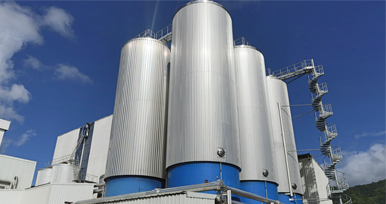

About
Grenada Breweries Limited was established in 1960 and is licensed to produce Carib Lager Beer, Guinness Foreign Extra Stout, Shandy Carib, Ginseng-Up (non-alcoholic), Maxi Malt, Vita Malt, Malta Carib, Ting Grapefruit Beverage and Juicy Cool beverages. Carib, Stag, Mackeson, Shandy Carib and Ginseng are exported to five regional markets. Every beverage is made without a single deviation from the standard of quality set by the Trinidad Brewery. It also distributes Pepsi, 7 Up, Mountain Dew, Slice and Smirnoff Ice.

Trinidad and Tobago
Before we sold our first bottle of beer back in 1950, we skillfully mastered the production process, delivering the highest quality and a perfect lager. Trinidad and Tobago